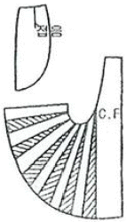
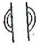

양장기능사 (2007-09-16 기출문제)
1과목: 임의 구분
1. 다음 계측점 중 자를 겨드랑이에 끼워 뒤 겨드랑이 밑에 표시한 점과 어깨 끝점과의 중간점은?
- 목옆점
- 등너비점
- 가슴너비점
- 어깨끝점
(정답률: 69%)

2. 스커트의 원형에서 가장 일반적인 가로의 기초선은?
- 엉덩이 둘레/2 + 0.5 ~ 1cm
- 엉덩이 둘레/2 + 2 ~ 3cm
- 엉덩이 둘레/2 + 4 ~ 5cm
- 엉덩이 둘레/2 + 6cm
(정답률: 83%)
3. 북을 사용하지 않고 루퍼를 사용하며 2본침, 3본사 방식이 있는 재봉기는?
- 단환봉 재봉기
- 이중환봉 재봉기
- 본봉 재봉기
- 주변 감침봉 재봉기
(정답률: 81%)
4. 봉비(skip)의 원인이 아닌 것은?
- 바늘의 불량이나 바늘 끝 파손
- 꼬임이 강한 실을 사용
- 노루발의 압력이 강한 경우
- 바늘과 북 끝의 타이밍 불량
(정답률: 57%)
5. 제도에 사용되는 약자와 명칭이 틀린 것은?
- B.L. - 가슴둘레선
- N.P. - 목점
- A.H. - 소매둘레
- S.P. - 어깨끝점
(정답률: 89%)
6. 어깨가 처진 경우 길 보정방법으로 가장 적합한 것은?
- 어깨만 올려 보정한다.
- 어깨만 내려 보정한다.
- 어깨를 올려주고 어깨 처진만큼 진동둘레 밑부분도 올려 준다.
- 어깨를 내려주고 어깨 처진만큼 진동둘레 밑부분도 내려 준다.
(정답률: 78%)
7. 폭 90cm의 옷감으로 스커트 길이가 70cm인 타이트 스커트르르 만들 때의 필요한 옷감량으로 가장 적합한 것은? (단, 시접은 15cm임)
- 85cm
- 155cm
- 195cm
- 225cm
(정답률: 80%)
8. 다음과 같은 스커트 제작법은?

- 고어 스커트
- 개더 스커트
- 요크를 댄 플리츠 스커트
- 요크를 댄 플레어 스커트
(정답률: 76%)
9. 바느질 방법에 따른 강도에 관한 설명으로 틀린 것은?
- 바느질 방법의 종류에 따라 그 강도가 달라진다.
- 의복의 바느질 강도에 있어서는 디자인보다 기능적인 면을 생각해야 한다.
- 바느질 방법에 따른 절단강도는 통솔보다는 쌈솔이 크다.
- 바느질에서는 여러 번 박을수록 옷의 실루엣이 곱게 표현되기가 쉽다.
(정답률: 80%)
10. 재봉기의 고장원인 중 윗실이 끊어질 경우와 가장 관계가 있는 것은?
- 톱니에 결함이 있다.
- 노루발 압력에 결함이 있다.
- 바늘과 북의 타이밍에 결함이 있다.
- 북 및 북집에 결함이 있다.
(정답률: 62%)
11. 옷감을 다리미로 늘려서 정리하는 부분이 아닌 것은?
- 스커트 허리부분
- 앞다리가 시작되는 바로 밑
- 바지 뒤
- 소매 안쪽
(정답률: 60%)
12. 다음 제도 기호의 표시에 해당되는 것은?

- 늘림
- 줄임
- 주름
- 맞춤
(정답률: 95%)
13. 상체가 곧고 가슴이 높게 솟아 있으며 엉덩이는 풍만하고 배가 평편한 자세의 체형은?
- 굴신체
- 반신체
- 비만체
- 후신체
(정답률: 87%)
14. 포켓(pockets) 중 실제로 주머니는 달려있지 않고 장식으로 플랩(flap)만 달아 놓은 것은?
- 하프(half) 포켓
- 사이드(side) 포켓
- 폴스(false) 포켓
- 라운드(round) 포켓
(정답률: 70%)
15. 가슴 다트위의 진동둘레 부위와 뒤 어깨 밑에 군주름이 생길 때의 보정으로 옳은 것은?
- 어깨를 올려주고 진동둘레 밑부분은 같은 치수로 내려 수정한다.
- 어깨 솔기를 턴서 군주름 분량만큼 시침 보정하여 어깨를 내려주고 어깨 처짐만큼 진동둘레 밑부분도 내려 수정한다.
- 뒷 길의 어깨를 올려주고 진동둘레 밑부분을 서로 다른 치수로 내려준다.
- 앞 길의 어깨를 올려주고 진동둘레 밑부분을 서로 다른 치수로 내려준다.
(정답률: 69%)
16. 손바느질의 올바른 새발감침은?
- 바늘 땀을 한 올씩만 되박아 준다.
- 바늘 땀을 두 올씩만 되박아 준다.
- 왼쪽에서 오른쪽으로 순서대로 떠나간다.
- 오른쪽에서 왼쪽으로 순서대로 떠나간다.
(정답률: 68%)
17. 45° 각도를 이루는 두 개의 선을 먼저 긋고 그 선에 맞추어 스커트의 절개선을 벌려 주는 스커트는?
- 45° 플레어 스커트
- 90° 플레어 스커트
- 180° 플레어 스커트
- 360° 플레어 스커트
(정답률: 75%)
18. 목둘레선과 어깨 끝점선과 만나는 점으로 어깨너비의 중심부를 지나는 측정점은?
- 목옆점
- 목뒤점
- 어깨끝점
- 등너비점
(정답률: 70%)
19. 상반신 반신체의 원형 보정에 대한 설명으로 옳은 것은?
- 뒤목 중심에 옆으로 주름이 생길 때는 목선을 수정한다.
- 뒤 어깨선을 늘리고 그 분량만큼 앞 어깨선은 줄인다.
- 앞중심에서 사선으로 절개선을 넣어 앞길이의 부족량을 늘려준다.
- 앞중심에 생긴 주름량 만큼 접어주고 옆선과 다트를 줄여준다.
(정답률: 71%)
20. 원가계산 방법으로 틀린 것은?
- 제조 원가 = 재료비 + 인건비 + 제조경비
- 총원가 = 제조원가 + 판매간접비 + 일반관리비
- 판매가 = 총원가 + 관리비
- 이익 = 판매가 - 총원가
(정답률: 59%)
2과목: 임의 구분
21. 겉감의 기본 시접으로 가장 적당한 것은?
- 어깨와 옆선 - 5cm
- 목둘레선 - 1cm
- 허리선 - 3cm
- 스커트단 - 2cm
(정답률: 92%)
22. 시접의 한쪽을 안으로 0.3cm~0.5cm 내어서 박은 다음 그 시접으로 접어서 한번 더 박는 바느질은?
- 가름솔
- 통솔
- 쌈솔
- 뉜솔
(정답률: 67%)
23. 다음 중 데일러드 재킷에서 심지가 부착되지 않는 곳은?
- 뒷트임
- 밑단
- 라펠
- 옆선
(정답률: 72%)
24. 다음 바느질 방법 중 장식봉이 아닌 것은?
- 샤링
- 파이핑
- 커프스
- 스모킹
(정답률: 64%)
25. 두 장의 직물에 패턴의 완성선을 표시할 때 쓰이는 방법으로 시침실을 사용하는 것은?
- 실표뜨기
- 어슷시침
- 시침질
- 박음질
(정답률: 84%)
26. 코트 단 및 원피스 단을 정리할 때의 설명으로 옳은 것은?
- 겉단을 접어 새발감침으로 고정시킨다.
- 안감은 겉단보다 5~7cm 짧게 하여 박아준다.
- 겉단은 안감의 길이와 똑같이하여 양 옆 솔기 끝에 3cm 길이의 실 루프로 고정시킨다.
- 겉단 끝에 안감으로 바이어스 처리 후 공그르기를 하며 안감을 겉단보다 2~3cm 정도 짧게 한다.
(정답률: 74%)
27. 피혁을 봉제할 때 가장 적절한 재봉기는?
- 주변감침봉 재봉기
- 본봉 재봉기
- 이중환봉 재봉기
- 단환봉 재봉기
(정답률: 78%)
28. 시착에서 일반적인 관찰방법으로 틀린 것은?
- 전체적인 실루엣이 알맞은가를 관찰한다.
- 옷감의 올이 바로 놓였는가를 관찰한다.
- B.P의 위치가 맞고 다트의 위치ㆍ길이ㆍ분량 등이 알맞은가를 관찰한다.
- 시침 바느질 전에 속옷에 맞추어 겉옷을 정리하여 바르게 착용한 후 핀으로 꽂아가면서 관찰ㆍ보정한다.
(정답률: 64%)
29. 길과 연결하여 구성된 소매는?
- 래글런 소매
- 비숍 소매
- 퍼프 소매
- 캡 소매
(정답률: 88%)
30. 소매산의 제도 약자는?
- F.S.H
- B.S.H
- S.C.H
- S.B.L
(정답률: 91%)
31. 면직물에 있어서 산화 섬유소가 생성되어서 섬유가 약해지는 경우는?
- 아세트산으로 처리할 때 온도가 낮은 경우이다.
- 수산화나트륨 용액으로 삶을 때 직물이 노출되어 공기와 접촉하는 경우이다.
- 하이드로설피어드를 사용하여 표백할 때 직물이 노출되어 공기와 접촉하는 경우이다.
- 냉액에서 알칼리 용액으로 처리할 대 농도가 진한 경우이다.
(정답률: 71%)
32. 마 섬유 중 단섬유의 길이가 가장 길고, 강도가 식물성 섬유에서 가장 강하며, 목질 셀룰로스를 포함하지 않고 순수한 셀루로스로 되어 있는 섬유는?
- 아마
- 대마
- 저마
- 황마
(정답률: 50%)
33. 일광에 대하여 취화가 가장 큰 합성섬유는?
- 아크릴
- 나일론
- 폴리에스테르
- 스판덱스
(정답률: 64%)
34. 섬유기 습윤하였을 때 강도가 더 증가하는 섬유는?
- 비스코스레이온
- 양모
- 면
- 아세데이트
(정답률: 82%)
35. 섬유의 변수측정에 알맞은 표준상태의 온도와 습도는?
- 20±2℃, 65±5% RH
- 20±2℃, 65±2% RH
- 25±5℃, 70±2% RH
- 25±5℃, 65±2% RH
(정답률: 74%)
36. 무명과 폴리에스테르 혼용제품에서 무명을 가장 잘 용해시키는 약제는?
- 100% 아세톤
- 70% 황산
- 2.5% 수산화나트륨
- 20% 염산
(정답률: 45%)
37. 폴리비닐알코올계 섬유는 방사 후에 포름알데히드로 처리하여 아세탈화 시키는데 그 이유는?
- 신도의 증가
- 내광성의 증가
- 흡습성 증가
- 내수성의 증가
(정답률: 53%)
38. 다음 섬유 중 속옷 감으로 가장 적합한 것은?
- 부드럽고 촉감이 좋은 견직물
- 땀과 지방을 잘 흡수하는 면직물
- 보온이 잘 되고 통기성이 있는 모직물
- 세탁하기 쉽고 건조가 빠른 합성직물
(정답률: 78%)
39. 의복 제작시 안감으로 선택하기에 적당한 섬유는?
- 면직물
- 견직물
- 레이온직물
- 나일론직물
(정답률: 72%)
40. 다음 중 셀룰로스 섬유가 아닌 것은?
- 면
- 마
- 양모
- 케이폭
(정답률: 50%)
3과목: 임의 구분
41. 다음 중 녹색 잔디 위에서 가장 눈에 잘 뜨이는 색은?
- 노랑
- 파랑
- 연두
- 자주
(정답률: 38%)
42. 다음 중 한 색상의 명도와 채도를 변화시킨 배색으로 하늘색, 코발트 블루, 남색의 조합 등 무난한 느낌의 배색은?
- 콘트라스트(contrast) 배색
- 톤 인 톤(ton in ton) 배색
- 포 카마이와(faux camaieu) 배색
- 톤 온 톤(ton on ton) 배색
(정답률: 53%)
43. 가을의 복식 배색으로 가장 효과적인 색은?
- 검정과 녹색
- 노랑과 갈색
- 파랑과 흰색
- 연두와 보라
(정답률: 80%)
44. 다음 중 색상에 의해 좌우되는 색의 감정과 가장 관계가 깊은 것은?
- 온도감
- 중량감
- 강약감
- 경연감
(정답률: 67%)
45. 다음 중 함께 사용되는 색에 따라 느낌이 달라지는 색상은?
- 빨강
- 파랑
- 청록
- 보라
(정답률: 78%)
46. 먼셀 표색계에서 색표가 방법인 HV/C에서 H는 무엇을 뜻하는가?
- 명도
- 색상
- 순도
- 채도
(정답률: 63%)
47. 큰 꽃무늬 원피스를 강조할 수 있는 가장 효과적인 연출 방법은?
- 꽃 무늬와 같은 색으로 트리밍 장식을 한다.
- 단색의 스카프를 이용하여 문양의 느낌을 강조한다.
- 꽃 코사지를 가슴에 단다.
- 반대색의 꽃무늬 숄을 걸친다.
(정답률: 96%)
48. 인접색의 조화가 받을 수 있는 효과는?
- 활기찬 시각적인 효과
- 격조 높고 다양한 효과
- 화려하고 원색적인 효과
- 차분하고 안정된 효과
(정답률: 85%)
49. 다음 중 가장 좋은 디자인은?
- 아름다움보다 실용성에 치중한 디자인
- 유행에 민감한 디자인
- 기능보다 미적인 면을 중요시 한 디자인
- 기능과 미가 결합된 독창적인 디자인
(정답률: 96%)
50. 흰색에서 부터 차츰 차츰 어두워지는 회색계통을 거쳐 검정색에 이르는 것으로 명도의 차이만 나타내는 색은?
- 유채색
- 무채색
- 동색
- 인근색
(정답률: 69%)
51. 피복의 손상과 관계가 가장 작은 것은?
- 수축과 신장
- 변색과 퇴색
- 탄성과 레질리언스
- 찢어짐과 터짐
(정답률: 52%)
52. 다음 중 편성물의 단점에 속하는 것은?
- 신축성
- 흡습성
- 필링성
- 다공성
(정답률: 55%)
53. 주자 조직의 특징을 설명한 것은?
- 날실과 씨실의 굴곡이 가장 많으며 직축률이 가장 크다.
- 구김이 잘 생기고 광택은 비교적 불량한 편이다.
- 직물의 밀도를 크게 증가시켜 제작할 수 없으나 광택이 우수하다.
- 날실과 씨실이 각각 5올 이상으로 구성되어 있고 광택이 우수하다.
(정답률: 63%)
54. 명주직물에 증량가공을 하는 목적은?
- 겉모양과 촉감을 개선한다.
- 세리신의 무게를 증가시킨다.
- 직물에 딱딱함과 뻣뻣함을 부여한다.
- 무게 증가와 드레이프성을 부여한다.
(정답률: 64%)
55. 다음 중 면 섬유에 적합하지 않은 염료는?
- 직접 염료
- 분산 염료
- 반응성 염료
- 배트 염료
(정답률: 55%)
56. 섬유가 가지고 있는 색소를 산화 또는 환원에 의해 분해하여 섬유를 순백으로 만드는 공정은?
- 표백
- 정련
- 증백
- 순화
(정답률: 79%)
57. 피복의 위생상의 성능과 가장 관련이 적은 것은?
- 통기성
- 흡수성
- 방충성
- 열전도성
(정답률: 43%)
58. 천의 표면에 섬유가 서로 엉켜서 작은 보풀이 생기는 것을 측정하는 시험은?
- 필링 시험
- 강연도 시험
- 피열 강도 시험
- 마찰 견뢰도 시험
(정답률: 73%)
59. 직물의 3원 조직에 속하지 않는 것은?
- 평직
- 능직
- 사직
- 주지직
(정답률: 83%)
60. 다음 중 날실과 씨실이 각각 3올 이상 서로 교차하여 이루어지는 조직은?
- 경편조직
- 위편조직
- 시문직
- 주자직
(정답률: 37%)